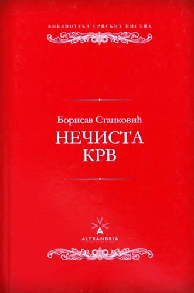

Садржај Романа
Подељен је на 33 поглавља која можемо поделити на 3
драмска места:
- Прво драмско место-климакс- продаја
кћерке непознатом странцу, газда Марку, и то за
дванаестогодишњег сина Томчу.
- Друго драмско
место-дан свадбе и жеља газда Марка да се зближи са Софком – тренутак искушења
- Треће драмско место-улазак ефенди Мите у Томчину и
Софкину кућу и тражење новца, као и тежак живот Софке
